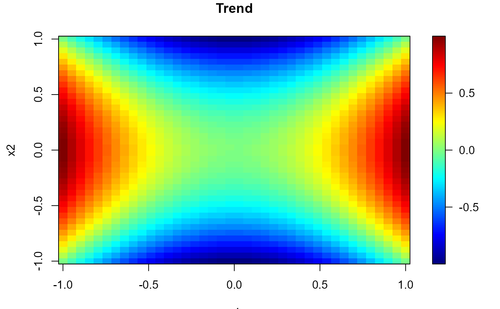

Image plot with a color scale
simage (generic function) draws an image (a grid of colored rectangles)
and (optionally) adds a legend strip with the color scale
(calls splot and image).
plot.np.den calls simage.data.grid
(contour and points also by default).
simage(x, ...) # S3 method for default simage(x = seq(0, 1, len = nrow(s)), y = seq(0, 1, len = ncol(s)), s, slim = range(s, finite = TRUE), col = jet.colors(128), breaks = NULL, legend = TRUE, horizontal = FALSE, legend.shrink = 1, legend.width = 1.2, legend.mar = ifelse(horizontal, 3.1, 5.1), legend.lab = NULL, bigplot = NULL, smallplot = NULL, lab.breaks = NULL, axis.args = NULL, legend.args = NULL, graphics.reset = FALSE, xlab = NULL, ylab = NULL, ...) # S3 method for data.grid simage(x, data.ind = 1, xlab = NULL, ylab = NULL, ...) # S3 method for np.den plot(x, y = NULL, log = TRUE, contour = TRUE, points = TRUE, col = hot.colors(128), tolerance = npsp.tolerance(), ...)
Arguments
| x | grid values for |
|---|---|
| ... | additional graphical parameters (to be passed to |
| y | grid values for |
| s | matrix containing the values to be used for coloring the rectangles (NAs are allowed).
Note that |
| slim | limits used to set up the color scale. |
| col | color table used to set up the color scale (see |
| breaks | (optional) numeric vector with the breakpoints for the color scale:
must have one more breakpoint than |
| legend | logical; if |
| horizontal | logical; if |
| legend.shrink | amount to shrink the size of legend relative to the full height or width of the plot. |
| legend.width | width in characters of the legend strip. Default is 1.2, a little bigger that the width of a character. |
| legend.mar | width in characters of legend margin that has the axis. Default is 5.1 for a vertical legend and 3.1 for a horizontal legend. |
| legend.lab | label for the axis of the color legend. Default is no label as this is usual evident from the plot title. |
| bigplot | plot coordinates for main plot. If not passed these will be determined within the function. |
| smallplot | plot coordinates for legend strip. If not passed these will be determined within the function. |
| lab.breaks | if breaks are supplied these are text string labels to put at each break value. This is intended to label axis on a transformed scale such as logs. |
| axis.args | additional arguments for the axis function used to create
the legend axis (see |
| legend.args | arguments for a complete specification of the legend
label. This is in the form of list and is just passed to the |
| graphics.reset | logical; if |
| xlab | label for the x axis, defaults to a description of |
| ylab | label for the y axis, defaults to a description of |
| data.ind | integer (or character) with the index (or name) of the component containing the values to be used for coloring the rectangles. |
| log | logical; if |
| contour | logical; if |
| points | logical; if |
| tolerance | tolerance value (lower values are masked). |
Value
Invisibly returns a list with the following 3 components:
plot coordinates of the main plot. These values may be useful for drawing a plot without the legend that is the same size as the plots with legends.
plot coordinates of the secondary plot (legend strip).
previous graphical parameters (par(old.par)
will reset plot parameters to the values before entering the function).
Side Effects
After exiting, the plotting region may be changed
(par("plt")) to make it possible to add more features to the plot
(set graphics.reset = FALSE to avoid this).
See also
splot, spoints, spersp,
image, image.plot, data.grid.
Examples
# # Regularly spaced 2D data nx <- c(40, 40) # ndata = prod(nx) x1 <- seq(-1, 1, length.out = nx[1]) x2 <- seq(-1, 1, length.out = nx[2]) trend <- outer(x1, x2, function(x,y) x^2 - y^2) simage( x1, x2, trend, main = 'Trend')# # Multiple plots set.seed(1) y <- trend + rnorm(prod(nx), 0, 0.1) x <- as.matrix(expand.grid(x1 = x1, x2 = x2)) # two-dimensional grid # local polynomial kernel regression lp <- locpol(x, y, nbin = nx, h = diag(c(0.3, 0.3))) # 1x2 plot old.par <- par(mfrow = c(1,2)) simage( x1, x2, y, main = 'Data') simage(lp, main = 'Estimated trend')par(old.par)